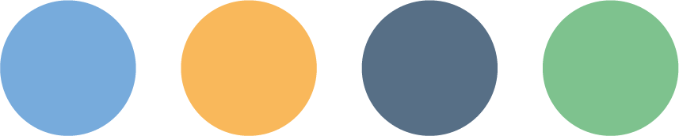

Ils se sont pliés en 4, pour faire venir le chemin de fer à Chatelaillon-les-Bains.

Tentatives restantes : 4
Bravo !
Regardez cette gare qui se dresse devant vous ! Elle est le véritable point de départ de notre civilisation balnéaire. Sans l'arrivée providentielle du chemin de fer et de ces fameux "trains de plaisir" affrétés par la Compagnie des Charentes à la fin du 19ème siècle, Châtelaillon ne serait jamais devenue cette station si prisée. C'est le portail majestueux par lequel affluent tous nos illustres curistes. Juste ici, le parc de verdure constitue notre havre de paix mondain. Après le violent et traumatisant bain médical, la haute société vient y flâner pour se remettre de ses émotions. On y écoute la douce musique s'échappant des kiosques, on y discute des dernières rumeurs parisiennes. Mais attention, le tout doit se faire bien à l'abri sous des ombrelles épaisses !
Voici votre autre précepte.
Le Culte du Teint de Navet !
Le soleil est l'ennemi juré de notre aristocratie. Le bronzage de la peau est strictement réservé aux paysans et aux ouvriers agricoles ! Un curiste digne de ce nom se doit de cultiver avec soin une pâleur quasi cadavérique. Sur cette élégante promenade, les voiles superposés, les longues mitaines et les ombrelles sombres sont de rigueur absolue. Ne laissez passer aucun rayon mortel sur votre épiderme, sous peine d'une exclusion immédiate de nos cercles mondains !